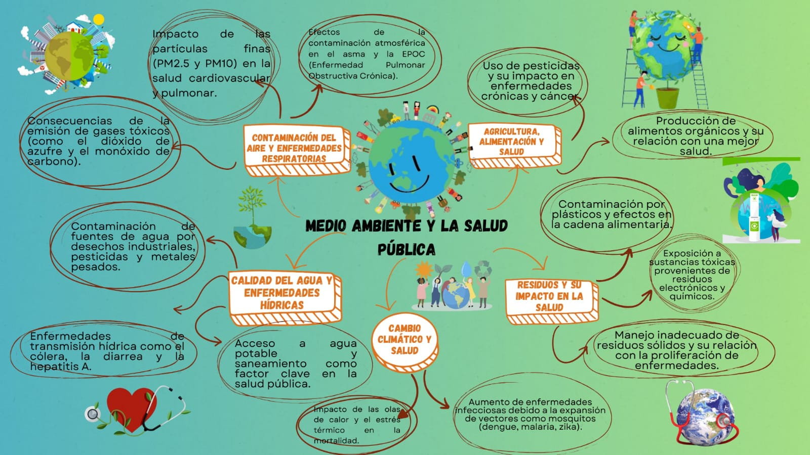

Medio Ambiente y Salud Pública
Medio Ambiente y Salud Pública
El medio ambiente influye directamente en la salud pública. La contaminación del aire, el agua y el manejo de residuos impactan nuestra calidad de vida. Es fundamental tomar medidas para preservar el equilibrio ecológico y garantizar un futuro saludable para todos.
¿Qué es el Medio Ambiente y Salud Pública?
El medio ambiente y la salud pública están estrechamente relacionados. Un entorno saludable reduce enfermedades y mejora la calidad de vida. La contaminación y el cambio climático pueden afectar gravemente la salud de las personas, por lo que es vital cuidar nuestro ecosistema.

×